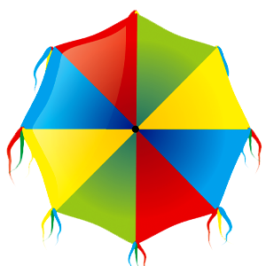

É hora de ativar o modo "FOLIÃO" que há em você, no carnaval pode tudo,
menos ficar parado de cara feia. Coloque um sorriso no rosto e se jogue na FOLIAAAAAA!
-

A origem do carnaval
Em 4 de fevereiro de 1978, cerca de 75 pessoas fantasiadas de almas penadas percorreram as ruas do bairro de São José, área central do Recife. Com seus sacos de confetes e serpentinas, elas foram acompanhadas por uma orquestra de Frevo composta por 22 músicos. Nascia assim o Clube das Máscaras o Galo da Madrugada, que despertava antes do comércio, ao nascer do sol.
-
1979

Nos anos seguintes, o pequeno bloco, que nasceu da ideia de amigos e familiares de resgatar o Carnaval de rua do Recife, duplicou de tamanho e apenas uma orquestra já não dava conta de atender tantos foliões.
-
1994
Em 1994 o Galo da Madrugada viu o reconhecimento internacional: o 'Guiness Book' consagrou a agremiação como “o maior bloco de carnaval do planeta”, quando 1,5 milhão de foliões desfilaram pelas ruas do centro da cidade.
-
1995
O recorde do Galo da Madrugada estampou a capa da edição do Guiness Book deste ano, comemorando a façanha do ano anterior
-
2009
Em 19 de fevereiro de 2009, primeiro ano que a agremiação desfilaria sem a supervisão de Enéas Freire, a Assembleia Legislativa de Pernambuco aprovou e consagrou o Galo da Madrugada como Patrimônio Cultural Imaterial do Estado.
-
2012
Em 06 de março de 2012, o Galo da Madrugada recebeu a mais alta comenda do Estado: a Medalha da Ordem do Mérito Guararapes.
-
2017
Em 19 de dezembro de 2017, o Galo da Madrugada foi agraciado com a Medalha da Ordem do Mérito Cultural (OMC) 2017, maior honorífica dada pelo Governo Federal para reconhecer contribuições dada à cultura do Brasil. A entrega aconteceu no Palácio do Planalto, em Brasília.
-
2018
Em 2018, no aniversário de 40 anos do bloco, o desfile arrastou um público médio de 2,3 milhões pessoas às ruas do centro do Recife!
-
Hoje
O cortejo cresceu e começa mais tarde, se inicia pontualmente às 9h da manhã do sábado de Zé Pereira e encerra por volta das 18h30. Com 9h30 de duração, o número de staff para executar o desfile também cresceu, a cada ano, são contratados/participam diretamente:
- 30 trios elétricos
- 30 bandas/orquestras de frevo
- 10 carros de apoio
- 6 carros alegóricos
- 200 Diretores/Coordenadores de desfile,
- cerca 2.200 pessoas de apoio,
- 37 pessoas na sede da agremiação,
- 128 na produção dos trios elétricos,
- cerca de 1000 artistas entre cantores, músicos e bailarinos,
- cerca 750 pessoas de apoio nos camarotes, montados para vista do desfile do Galo da Madrugada, principalmente para os turistas;
- 312 carregadores de bonecos e bandeiras;
- 97 figurantes.
Além disso, as produções para a realização do desfile do Galo da Madrugada criam oportunidade de geração de renda para milhares de pessoas em diversos setores. Na concepção e realização das alegorias são 31 profissionais, entre cenógrafos, pintores e artesãos, que trabalham desde o mês de setembro de 2016 até o dia do desfile. Na produção das fantasias para o Galo (cerca de 300), desde novembro de 2016, em média 36 profissionais, entre costureiras, bordadeira e estilistas, se mobilizam para a criação das peças. Além das fantasias confeccionadas diretamente para o Galo da Madrugada, milhares de outras roupas festivas são produzidas por pessoas, famílias e lojas comerciais de diferentes marcas, a fim de atender aos foliões que tradicionalmente brincam fantasiados no Galo, gerando renda para o estado de Pernambuco.
Ao longo desses 40 anos, o bloco serviu e serve de inspiração para muitas outras agremiações, para além dos que não foram informados, existem alguns que notificaram o Galo da Madrugada sobre suas origens. Alguns deles:
• Galo de Manaus
• Capote da Madrugada
• Galinho de Genipabu
• Muriçocas do Miramar
• Pinto da Madrugada (Maceió)
• Galo da Madrugada do Rio de Janeiro
• Galinha da Tarde
• Galinho de Brasília
• Galo de Gaias
• Galo da Meia Noite
• Galo de Porto (Porto Alegre)
• Galo na Neve (Quebec – Canadá)
• Galo no Peru
O Galo da Madrugada gera mais de 4.500¹ oportunidades diretas de geração de renda e cerca de 30 mil indiretas¹. Todos os anos milhares pessoas (como costureiras, vendedores ambulantes, montadores de estruturas para camarotes, rede hoteleira, taxistas, restaurantes, lanchonetes, guias de turismo, seguranças, etc) são beneficiadas com o majestoso desfile promovido pelo Galo da Madrugada, que conta com a participação de cerca de 2 milhões de foliões que brincam democraticamente sem nenhuma distinção de cor, credo, classe social e orientação sexual.
¹ Número estimado